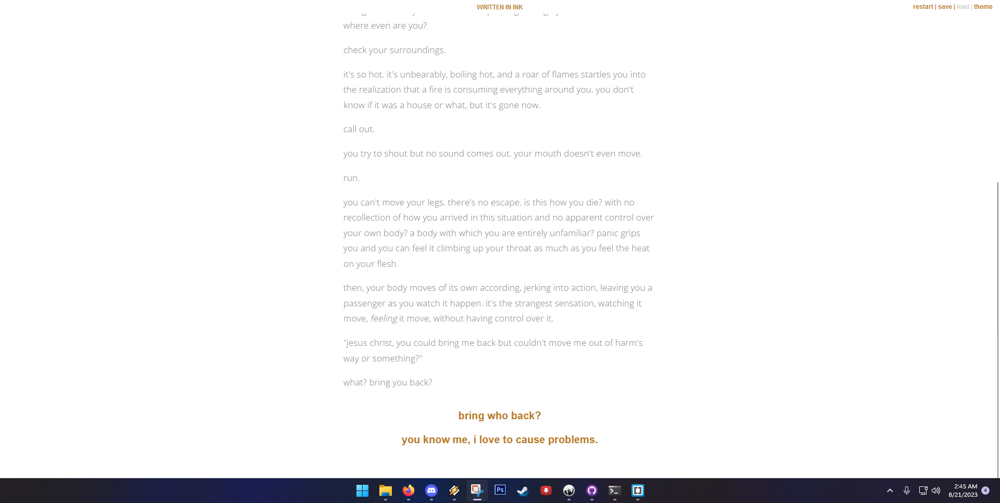

Go
Gotbiny devlog #1
aug 21 2023 @ ??? but probably late
today i finally sat down and started to learn how to use ink/inky. i figured if i want to even have a shot at entry-level narrative positions, i'd better have some public work to show off under my belt, so i'd better get cracking :)
i actually spent way more time figuring out how to make a blog than i spent messing with inky, because it turns out inky is really quick to get the hang of. the devlog was a last-second strike of inspiration.
most of day 1 was coming up with my concept (one i've had for awhile, actually), and then starting to hash out the specifics of how structuring works. i actually started with twine, which was... well, it was fine. i always thought i was sort of a visual person, but it turns out, i am a very language-oriented person. who would have guessed! it's me. that makes perfect sense actually.
and seeing the words laid out in front of me in a more code-like way like how ink and the inky editor function actually works a lot better for me. it's very similar to the html/css work i've done, so i felt right at home.
figuring out basic branching was pretty straight-forward. i also figured out how to add simple conditional statements (e.g. "this line only gets said if the player has seen this scene") and a little dice roll.

a screenshot of the inky editor, script on the left, rudimentary preview on the right
getting the live preview working was straight-forward also, at least by just exporting. i haven't quite figured out how to get it to keep my CSS though. i can set classes in inky, but then i can't define the CSS for those classes until after i export it for web...? and i can't re-export into the same location apparently...? maybe i'm missing something. i can't find a lot of info online about it. i could just copy the CSS file somewhere externally and then overwrite it after exporting every time i guess. what a pain!
a screenshot of a game running in the live preview of inky
maybe more soon! i thought about making videos but. it turns out narrative devlogs are just a lot of writing. a little more boring maybe, lol.